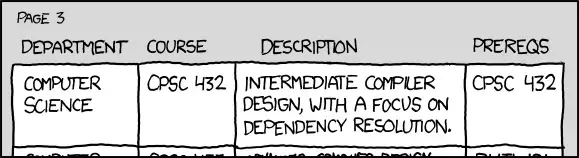

到目前为止，我们已经探讨了3种类型的关系：组合、聚合和关联。我们把最简单的一种关系放在最后介绍——依赖关系。
在日常交谈中，我们使用术语依赖性来表示一个对象依赖于另一个对象来完成给定的任务。例如，如果你的脚骨折了，你就需要依靠拐杖来走动。花朵依靠蜜蜂授粉，才能结出果实或繁殖后代。
当一个对象为了完成某些特定任务而调用另一个对象的功能时，就会发生依赖关系。这是一种比关联弱的关系，但是，对所依赖对象的任何更改都可能破坏(依赖的)调用者的功能。依赖关系总是单向的关系。
一个您已经见过很多次的依赖的好例子是std::ostream。我们使用std::ostream的类使用它是为了完成向控制台打印内容的任务，而不是为了其他目的。
例如：
C++
#include <iostream>
class Point
{
private:
double m_x{};
double m_y{};
double m_z{};
public:
Point(double x=0.0, double y=0.0, double z=0.0): m_x{x}, m_y{y}, m_z{z}
{
}
friend std::ostream& operator<< (std::ostream& out, const Point& point); // Point has a dependency on std::ostream here
};
std::ostream& operator<< (std::ostream& out, const Point& point)
{
// Since operator<< is a friend of the Point class, we can access Point's members directly.
out << "Point(" << point.m_x << ", " << point.m_y << ", " << point.m_z << ')';
return out;
}
int main()
{
Point point1 { 2.0, 3.0, 4.0 };
std::cout << point1; // the program has a dependency on std::cout here
return 0;
}在上面的代码中，Point与std::ostream没有直接关系，但是它依赖于std::ostream，因为操作符<<使用std::ostream将Point打印到控制台。
C++中的依赖和关联#
依赖关系和关联之间的区别通常容易混淆。
在C++中，关联是类级别上两个类之间的关系。也就是说，一个类保持与关联类的直接或间接“链接”作为成员。例如，Doctor类有一个指向其Patients成员的指针数组。你可以问医生谁是他的病人。Driver中有一个整型成员，表示driver对象拥有的Car。驾驶员总是知道与它相关联的是什么车。
依赖项通常不是类层面的概念——也就是说，所依赖的对象不是作为类成员出现的。相反，所依赖的对象通常根据需要实例化(如打开文件写入数据)，或作为参数传递到函数中(如上面重载操作符<<中的std::ostream)。
轻松一刻#
依赖 (转载自xkcd)：

当然，我们其实都知道，这实际上是一种反身关联。